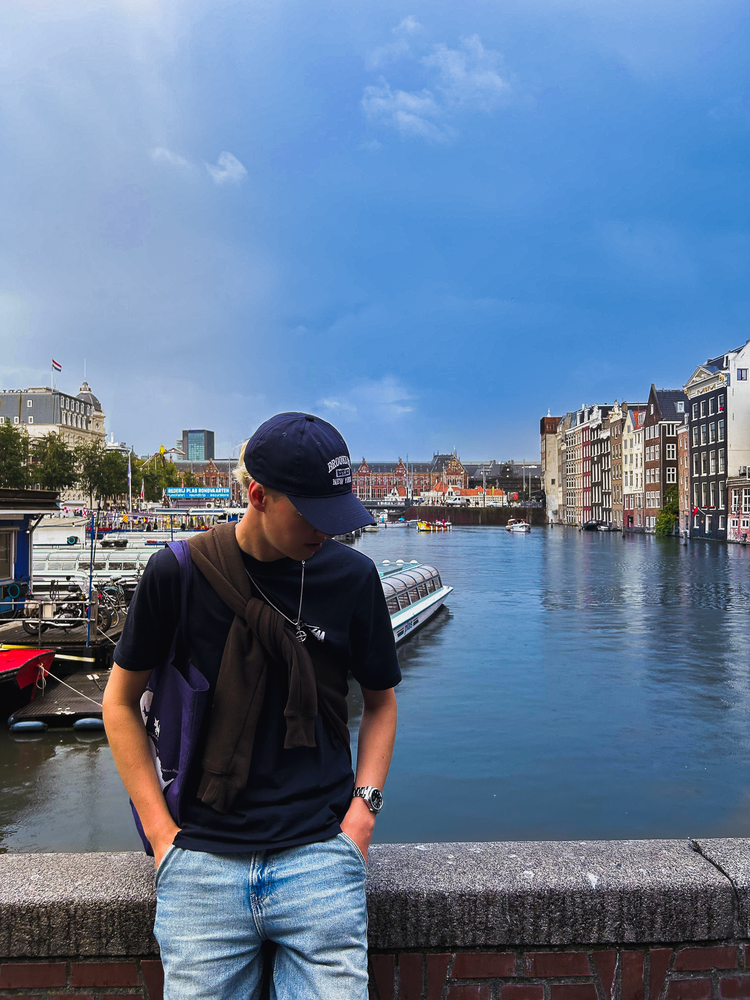

Ozols
Par Mani
Darbi
Kontakti
Ozols
Developer | Designer | Creator

"Esmu Markuss Ozols - full stack programmētājs no Latvijas. Mani interesē vairāka veida hobiji kā, piemēram, mūzika, droni, datorbūve, un daudz citiem radošiem hobijiem."